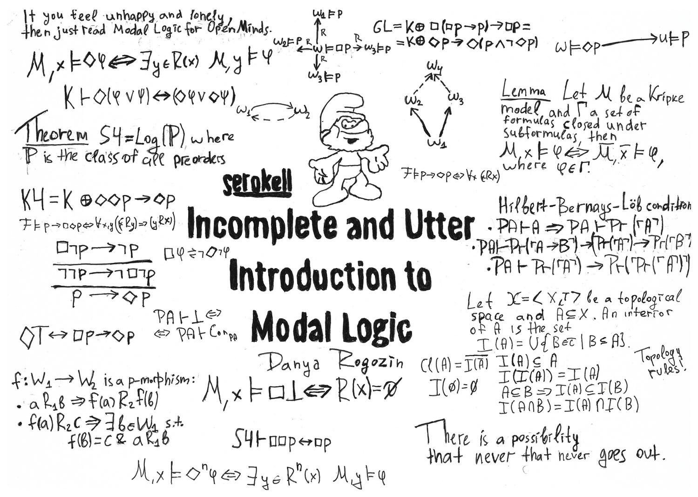

Preliminaries

Modal Logic
- Modal operators � and ◊, possibly indexed
�i and ◊i
- Modal logics K to S5
- Kripke semantics, semantic variations
- Local and global, axioms and consequence
The QMLTP library
- By Jens Otten and Thomas Raths
(link)
- Systems, problems, and results in first-order modal logic
- Uses the TPTP-like qmf language
Higher-Order Logic
- In the style of Church's simple type theory
- Extensional type theory implemented by ATP systems
- Henkin semantics